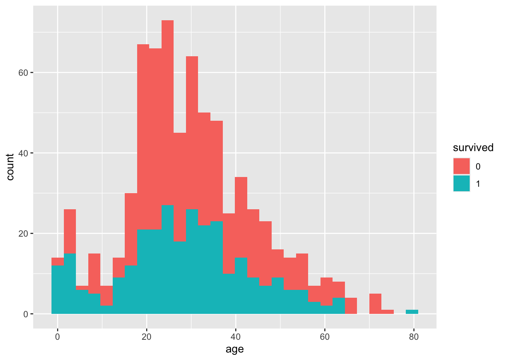

here() starts at /Users/alonrobbins/Desktop/Bren/winter_2025/esm_244/esm-244-w25-lab3
library(glmnet)
Loading required package: Matrix
Attaching package: 'Matrix'
The following objects are masked from 'package:tidyr':
expand, pack, unpack
Loaded glmnet 4.1-8
Rows: 891 Columns: 12
── Column specification ────────────────────────────────────────────────────────
Delimiter: ","
chr (5): name, sex, ticket, cabin, embarked
dbl (7): passenger_id, survived, pclass, age, sib_sp, parch, fare
ℹ Use `spec()` to retrieve the full column specification for this data.
ℹ Specify the column types or set `show_col_types = FALSE` to quiet this message.
ML Framework
Write a description of how you go about applying machine learning problems. If you drew a diagram, share with a neighbor and discuss.
what’s your research question
Gather data
Develop a hypothesis
Methodology map out the plan, get pseudo code
clean data / what variables
Look at the data / exploratory data analysis
Choosing metrics
Data split / into testing and training
Building models
Create our model options, what variables
Data preprocesing
train model on training data
tune our model
evaluate performance
model selection
Finalize the model (aka train it on whole dataset)
Interpret results / visualize / communicate
Tidymodels Overview
The creators of tidyverse have created a new package called tidymodels that is designed to make machine learning more accessible to R users. The package is designed to work with the tidyverse and tidydata principles.
Defining a Research Question
What are we trying to solve? The crucial step of any scientist that can take years to define and perfect.
What factors led to the survival of passengers on the Titanic?
How will go about solving our question? Use a classification algorithm to predict the survival of passengers on the Titanic. Interpret the variables that control observed outcomes.
In real life, we would have to go out and collect the data. Today, we will use the titanic dataset from the titanic package.
Data Exploration/Cleaning
Take 15 minutes to explore the data. Are there any immediate changes to the data that we need to change? What relationships can you see through graphs? What variables could be of interest to predict survival of passengers on the Titanic?
Is there metadata?
Column headers can be clearer
Can turn certain columns like sex and cabin into binary variables instead of characters
can definitely drop na
can do different visualizations to understand which variables are more prominent or not
variables to include: class, age?, sex, embark, fare,
summary(t_df)
passenger_id survived pclass name
Min. : 1.0 Min. :0.0000 Min. :1.000 Length:891
1st Qu.:223.5 1st Qu.:0.0000 1st Qu.:2.000 Class :character
Median :446.0 Median :0.0000 Median :3.000 Mode :character
Mean :446.0 Mean :0.3838 Mean :2.309
3rd Qu.:668.5 3rd Qu.:1.0000 3rd Qu.:3.000
Max. :891.0 Max. :1.0000 Max. :3.000
sex age sib_sp parch
Length:891 Min. : 0.42 Min. :0.000 Min. :0.0000
Class :character 1st Qu.:20.12 1st Qu.:0.000 1st Qu.:0.0000
Mode :character Median :28.00 Median :0.000 Median :0.0000
Mean :29.70 Mean :0.523 Mean :0.3816
3rd Qu.:38.00 3rd Qu.:1.000 3rd Qu.:0.0000
Max. :80.00 Max. :8.000 Max. :6.0000
NA's :177
ticket fare cabin embarked
Length:891 Min. : 0.00 Length:891 Length:891
Class :character 1st Qu.: 7.91 Class :character Class :character
Mode :character Median : 14.45 Mode :character Mode :character
Mean : 32.20
3rd Qu.: 31.00
Max. :512.33
t_df_clean <- t_df |>drop_na()surv_df <- t_df |>mutate(survived =factor(survived), ### categorical outcome variables need to be factorspclass =factor(pclass)) |>### turn some predictors to factorsselect(-cabin, -ticket)ggplot(surv_df, aes(x = age, fill = survived)) +geom_histogram()
`stat_bin()` using `bins = 30`. Pick better value with `binwidth`.
Warning: Removed 177 rows containing non-finite outside the scale range
(`stat_bin()`).

Data Split
We will set aside (“partition”) a portion of the data for building and comparing our models (80%), and a portion for testing our models after we’ve selected the best one (20%). NOT the same as folds - that will happen in the training/validation step.
### Check balance of survived columnsurv_df %>%group_by(survived) %>%summarize(n =n()) %>%ungroup() %>%mutate(prop = n /sum(n))
# A tibble: 2 × 3
survived n prop
<fct> <int> <dbl>
1 0 549 0.616
2 1 342 0.384
Tidymodels will split the data and label it for us.
set.seed(123)surv_split <-initial_split(surv_df, prop =0.80,strata = survived)### stratified on `survived`; training and test splits will both have ~60/40% survived = 0/1surv_train_df <-training(surv_split)surv_test_df <-testing(surv_split)
Check to make sure the data has the same proportion of splits. Why is it important to maintain the same proportion of splits?
surv_train_df %>%group_by(survived) %>%summarize(n =n()) %>%ungroup() %>%mutate(prop = n /sum(n))
# A tibble: 2 × 3
survived n prop
<fct> <int> <dbl>
1 0 439 0.617
2 1 273 0.383
surv_test_df %>%group_by(survived) %>%summarize(n =n()) %>%ungroup() %>%mutate(prop = n /sum(n))
# A tibble: 2 × 3
survived n prop
<fct> <int> <dbl>
1 0 110 0.615
2 1 69 0.385
Model Building
Constructing models in tidymodels is frighteningly simple. We tell R which kind of algorithm we want to build (model), what package the algorithm should come from (engine), and how to construct it.
We’re going to build two models: a logistic regression and a lasso logistic regression model.
glm_rec<-recipe(survived ~ sex + pclass, data = surv_train_df)# steps we need to do to prepare data for lassolasso_rec<-recipe(survived~.,data=surv_train_df) %>%update_role(passenger_id, new_role ="ID") %>%### passenger ID is just a tag, not a predictor or dependent variablestep_rm(name,age) %>%### don't want to consider name and age because of so much NAsstep_unknown(all_nominal(),-all_outcomes()) |>### if you see an NA make a new factor class called "uknown"step_dummy(all_nominal(),-all_outcomes()) |>### all category variables are recognized as dummy variablesstep_zv(all_numeric(),-all_outcomes()) |>### any variables with zero variance get rid of themstep_normalize(all_numeric(),-all_outcomes()) ### all numeric data needs to be normalized
Train Model
First we create a workflow that combines all the models and the receipes to control the data. Then we use that consistent pattern to fit our model. First let’s compare the models one time. Add comments to the following code chunk to describe what each step is doing. Feel free to run code.
# First the logistic regressionlog_wf <-workflow() %>%add_recipe(glm_rec) %>%add_model(log_md) log_fit<-log_wf %>%fit(surv_train_df)log_test<-surv_test_df |>mutate(predict(log_fit, new_data = surv_test_df)) |>mutate(predict(log_fit,new_data = surv_test_df, type='prob'))table(log_test$survived, log_test$.pred_class)
0 1
0 93 17
1 17 52
Now fill in the following code chunk to fit the lasso model. Create a table (or sometimes called a confusion matrix) that shows the predicted values versus the actual values.
One run of the model is not enough to determine which model is better. We need to run the model multiple times to determine which model is better. We can use cross-validation to determine which model is better. Instead of for loops or purrr, tidymodels as built in functions to do this for us.
Everything is stored in a workflow object. We can extract the coefficients from the logistic regression model using extract_fit_parsnip. The tidy function will make the output more readable. Describe the coefficients and what they mean. Create a clean table of the model output.